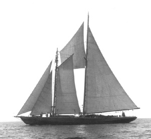

|  copyright - WHOI |
|
WHOI leased the schooner Blue Dolphin for the Labrador Expeditions
and the Arctic Institution of North America. She made cruises to the Labrador
coast during the summers of 1949, 1950, and 1951. In 1953 Blue Dolphin
was used for work on the continental shelf, and Georges Bank and down to
Bermuda. Blue Dolphin made a total of 11 cruises and was involved
in physical oceanography, marine biology, some coring, and depth sounding
while looking for seamounts. She was returned to Boothbay Harbor, Maine,
on 9/11/53.